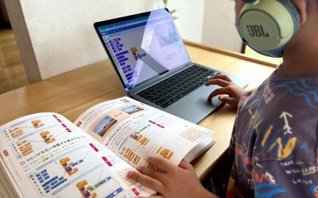

楽しいから、自然と続けられる。タブレットを使った知育あそびで、色・形・数の概念をゆっくり学びながら、集中力と思考力の土台を育てていきます。放課後等デイサービス（BLUE MOUSE）でのIT療育につながる、最初の一歩です。
Features
このプログラムの特徴
タブレット・タッチパネルで楽しく学ぶ
直感的に操作できるタブレットや知育アプリで、デジタル機器への親しみを自然に育てます。
色・形・数・文字の概念をゆっくり
就学前の認知発達に合わせた内容で、無理なく知識の土台をつくります。
集中して取り組める工夫
ゲーム要素やアニメーションを活用し、集中が続きにくいお子さまでも夢中になれる工夫をしています。
放課後等デイへの移行を見据えた設計
就学後のIT療育（BLUE MOUSE）へとつながる基礎を、未就学期から丁寧に積み上げます。
Benefits
IT知育あそびで育つ力
楽しみながら続けることで、集中力・思考力・デジタル親和性が育ちます。
集中して取り組む力
好きな活動を通じて、集中できる時間が少しずつ伸びていきます
認知・思考力の土台
色・形・数・因果関係などの基礎概念が身につきます
デジタル機器への親しみ
小さいころからの自然な関わりが、IT療育への移行をスムーズにします
成功体験による自己肯定感
「できた！」の積み重ねが、自信とやる気につながります
Steps
支援のステップ
お子さまの発達段階に合わせたアプリや課題を選び、無理のないペースで進めます。
タッチ操作に慣れる
まずはタブレットを触ること自体に慣れます。タップ・スワイプなど基本操作を楽しみながら学びます。
色・形・数の概念を遊びの中で
知育アプリで色の分類、形の認識、数の概念など、就学前の認知発達を丁寧に支援します。
簡単なパズル・論理課題へ
パズルや順番並び替えなど、考える楽しさを感じられる課題に少しずつ挑戦します。
就学後のIT療育へつなぐ
キーボードへの興味が出てきたら、タイピングの入口となる活動も取り入れ、小学生になってからの学びへとつなげます。
For